기뢰와 해협 (3) - 나라를 구한 360톤짜리 군함
게시: 2026-03-26T06:30:50+09:00
지금도 그렇지만, WW1 당시 기뢰를 제거하는 소해 작업은 해군에서 경시되는, 전혀 영광스럽지 않고 비효율적인데다 위험하기까지 한 임무로 취급되었음. 그런 임무에는 날렵한 구축함은 커녕 호위함도 아니고 그냥 트롤 어선을 징발하여 투입하는 경우가 많았고, 더 나쁜 것은 굳이 해군 요원들을 투입하지도 않고 그냥 어부들을 투입하는 경우가 많았음. 특히 WW1 초반엔 요즘보다 더더욱 위험한 임무였음. 이유는 초기의 소해 방식 때문. 초기의 기뢰 제거 방식은 2척의 소해정(대개 어선)이 한 쌍을 이루어 그 사이에 톱니가 달린 강철 와이어를 끌고 다니면서 계류 기뢰를 닻에 연결하는 강철 와이어를 끊어내는 것. 그렇게 닻에서 떨어져 나온 기뢰는 부력에 의해 물에 뜨게 되는데, 그러면 먼 거리에서 선원들이 소총을 쏘아 헤르츠 뿔을 부러뜨려 폭발시켰음. 그런데 이 방식으로 기뢰를 제거한다는 것은, 한 쌍의 소해정 중 1대는 반드시 기뢰밭 안쪽에 들어가야만 함. 소해정에도 물 속을 들여다 볼 눈이 없으므로 당연히 소해정도 기뢰에 부딪히는 경우가 종종 발생했고, 소해정들의 희생률은 매우 높았음. WW1 종료 시점에 영국은 트롤 어선 412척이 포함된 총 726척의 소해정을 보유. 이들 중 11,487발의 영국 및 독일제 계류 기뢰를 제거하는 과정에서 214척의 소해함이 희생됨. 이렇게 최전선 참호의 병사들보다 더 사상률이 높았던 소해정에서 복무하는 사람들은 대부분 민간인. 그러니 더더욱 소해정들은 사기도 낮았고 의욕도 없었으며, 작업은 느리기 짝이 없었음.
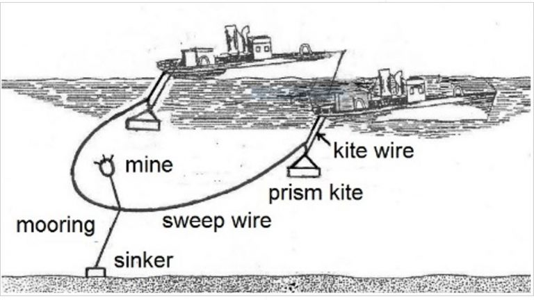
(소해정 2척이 짝을 이루어 기뢰 제거용 커터 와이어를 끌고 다니는 방식. 갈리폴리 전투 때는 이 방식이 유일한 소해 방식.)
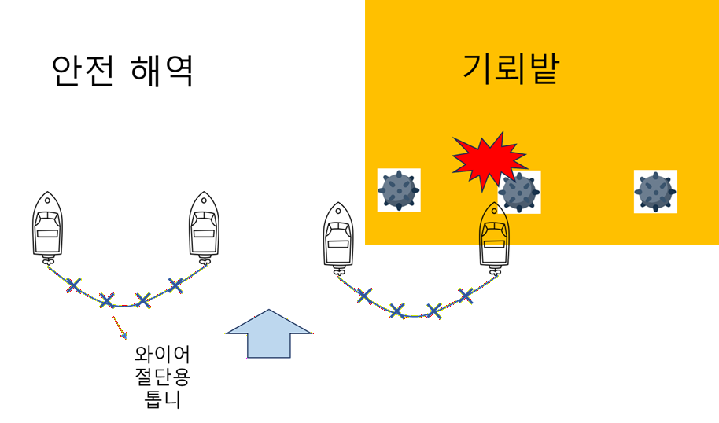
(이 한 쌍의 소해정을 이용하는 방식은 아무리 연구를 해봐도 두 척 중 하나는 위험 구역에 들어갈 수 밖에 없다는 단점이 있음.)
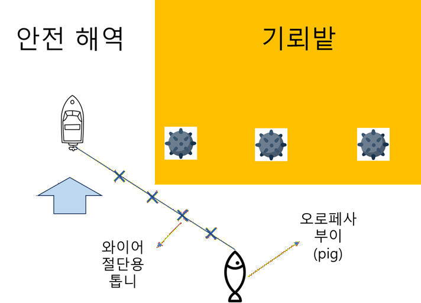
(1916년에 개발된 Oropesa sweep. 이 방식은 영국 해군이 소해정으로 사용하던 트롤 어선 HMT (His Majestic Trawler) Oropesa에서 처음 사용되었다고 하여 오로페사 소해 방식이라고 불리게 되었는데, 그 핵심은 Oropesa float, 혹은 그냥 돼지(pig)라는 물고기 모양의 부이(bouy)에 있었음. 이 오로페사 부이에는 측면을 향한 방향타가 달려 있어서, 이걸 와이어에 달아서 끌고 다니면 저렇게 왼쪽 혹은 오른쪽으로 전개되므로, 충분한 시간을 가지고 안전한 해역부터 반복하여 소해작업을 하면 이론적으로는 소해정 자체가 기뢰밭에 들어가는 위험을 무릅쓰지 않고서도 소해 작업이 가능.)
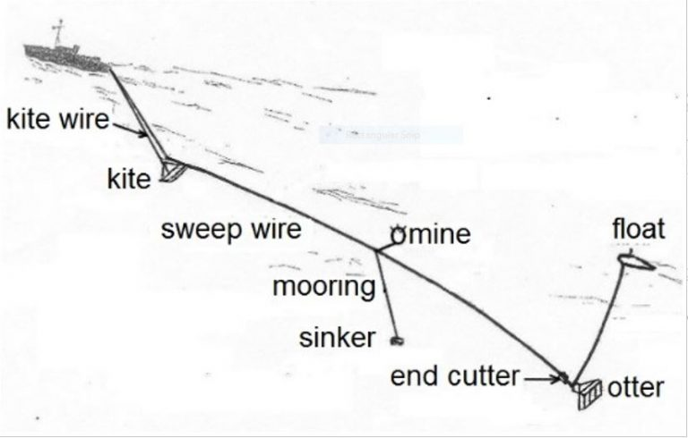 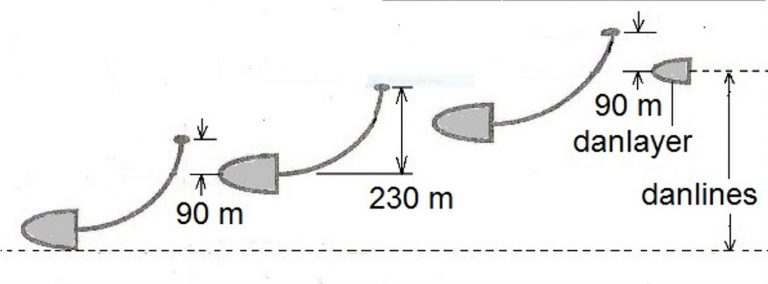 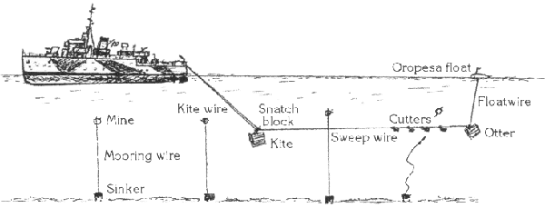 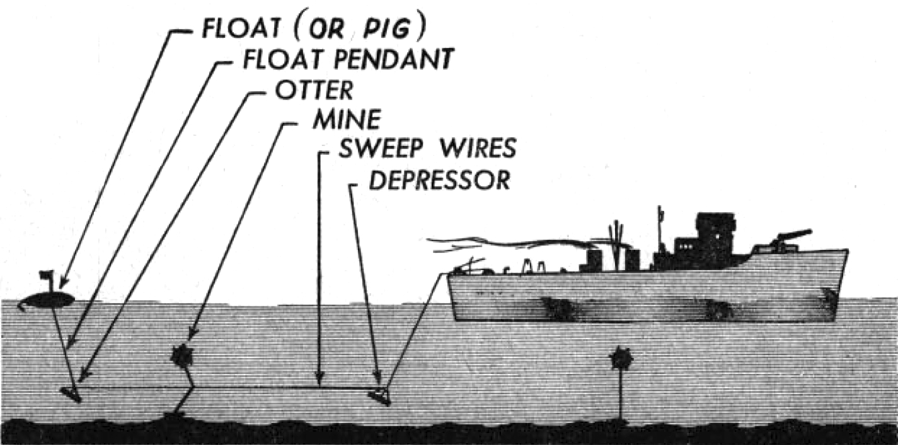
(오로페사 소해 장비는 저 Oropesa float 외에, 절단용 와이어를 일정 심도로 유지해주는 otter 및 kite라는 승강타가 달린 무게추의 역할도 매우 중요.)
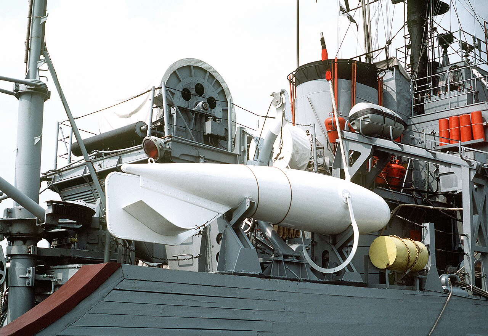
(오로페사 소해 장비의 핵심, Oropesa float의 모습. 기뢰를 닻과 연결하는 강철 와이어를 톱니 커터와 장력으로 끊어내야 하므로 저 float의 길이는 꽤 커서 약 3m 정도.)
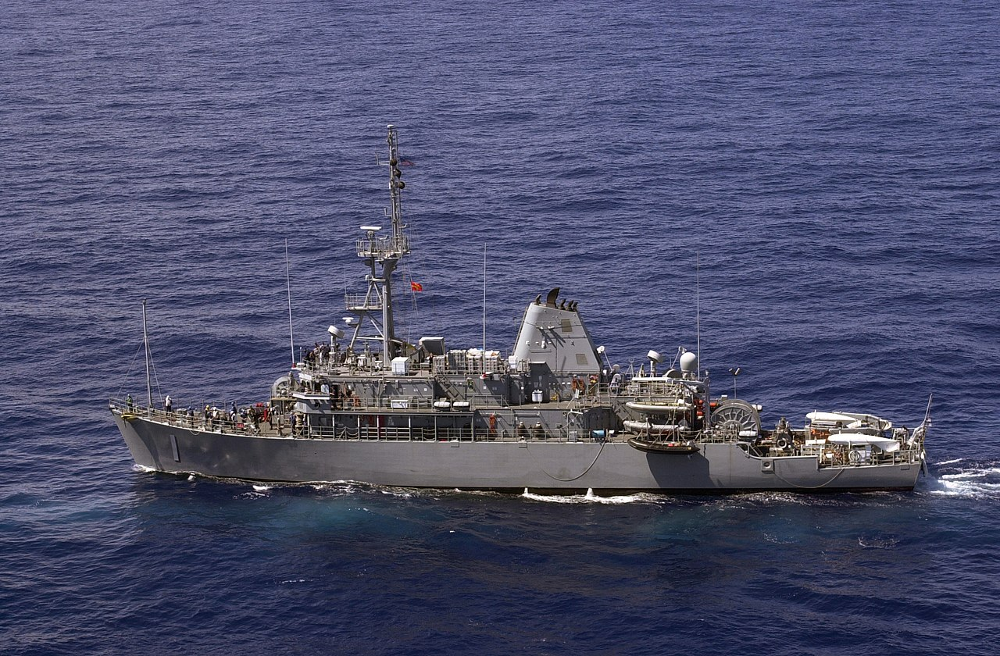
(세계 어느 나라의 소해함이건 저렇게 고물쪽 양현에 Oropesa float를 싣고 다니는 것이 보통. 사진은 2004년 RIMPAC 훈련에 참여한 미해군 소해함 USS Avenger (MCM-1, 1300톤, 14노트))
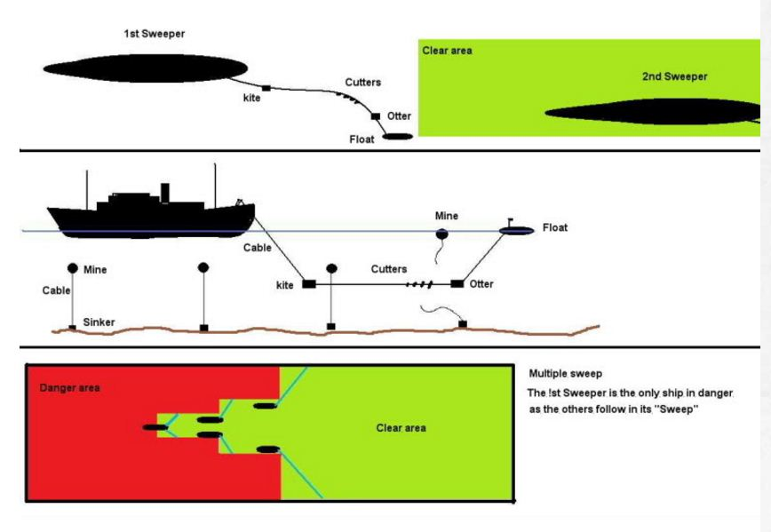
(물론 해군의 소해 작전에는 충분한 시간이 주어지지 않는 경우가 많아서, 저렇게 선두의 1척은 그냥 양현에서 한 쌍의 오로페사 부이를 끌고 가면서 위험에 노출되는 경우도 꽤 있다고.)
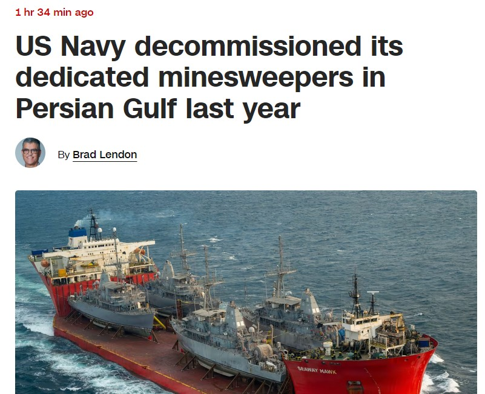
(원래 미해군에는 Avenger급 소해함이 총 14척 있었으나 차츰 퇴역하다가 하필 작년에, 그것도 하필 페르시아만에 배치되었던 4척을 한꺼번에 퇴역시켰음. 현재는 4척만 남아 있는데 모두 일본에 배치되어 있음. 이번 이란 전쟁이 치밀한 준비와 계획 하에 실행되었다면 저 어벤저급 소해함을 미리 페르시아만에 배치시켰겠으나 그런 것 같지는 않음.)
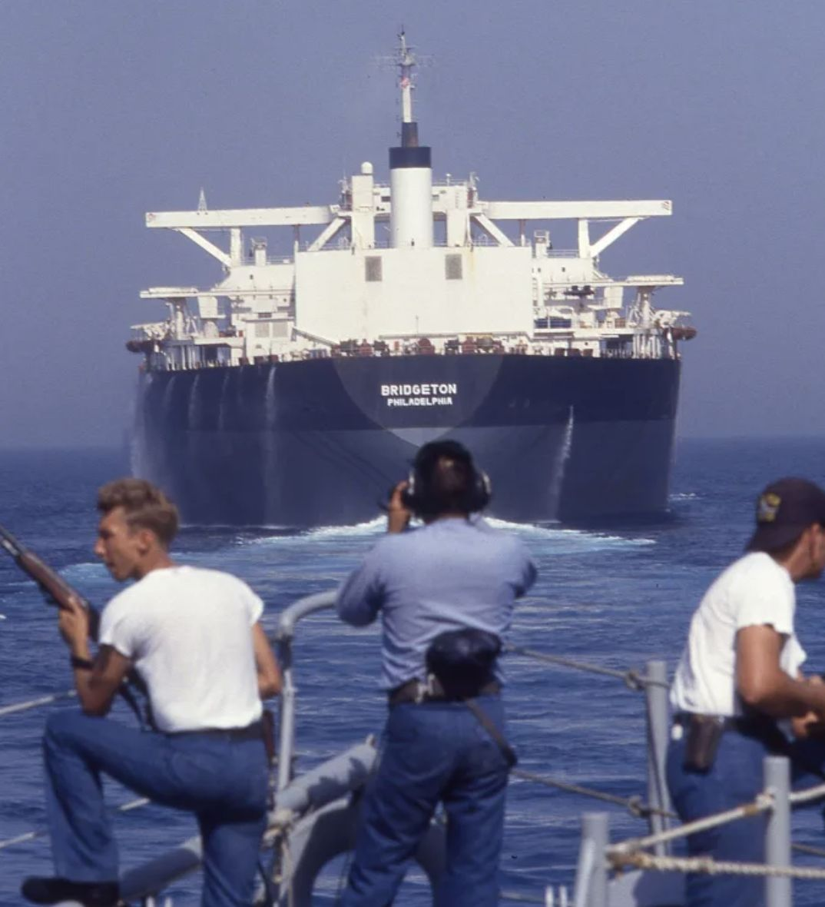
(이 사진은 1987년, 미해군의 호르무즈 유조선 호송 작전 Operation Earnest Will 중 찍힌 사진인데, 미해군 역사상 가장 굴욕적인 사진 중 하나라고 함. 이유는 사진 속 유조선인 브릿지턴호(Bridgeton)을 미해군 구축함들이 호위를 했는데, 정작 기뢰 의심 구역에 들어갈 때 즈음 해서는 미해군 구축함들이 이 거대한 유조선을 마치 소해함처럼 앞장 세우고 그 뒤만 졸졸 따라가는 모습을 연출했기 때문. 저렇게 갑판에 저격용 소총을 들고 서있는 미해군 승조원들은 만약 부유식 기뢰가 눈에 띄면 그 헤르츠 뿔을 총으로 쏘아서 폭발시키기 위해 감시하고 있는 것. 다만 그러려면 유조선 앞에 섰어야지 저렇게 뒤에 서면... ㅋ) 1915년 2월과 3월, 영불 함대의 소해 작업이 늦어진 이유는 저렇게 본질적으로 위험한 소해 작업을 민간인들에게 떠맡게 놓았기 때문. 게다가 낮에는 오스만 투르크군의 이동식 150mm 곡사포가 이리저리 위치를 옮겨가며 소해정들을 향해 위협 사격을 가함. 150mm 곡사포는 영불 함대의 전함 장갑을 뚫을 능력이 없었으므로 전함이나 순양함에게는 별 위협이 되지 않았으나 소해정들이나 구축함들에겐 큰 위협이 되었음. 그걸 피하기 위해 밤에도 소해 작업을 해보려 했으나, 당시 소해 작업은 물 위에 떠오른 기뢰를 총으로 쏘아 터뜨리는 것이었으므로 아무 것도 보이지 않는 밤에는 더욱 위험. 그래서 영불 함대는 소해함들의 소해 작업 속도를 내기 위해 좀 위험하더라도 다다넬즈 해협 깊숙히 진입하여, 해협 양안에서 소해정을 위협하는 고정 포대 및 이동식 150mm 곡사포를 제압하는 포격을 계속함. 양안에 늘어선 오스만 군도 바보가 아니었음. 며칠간 영불 함대의 기동 및 포격 패턴을 보니, 대충 4척의 전함이 다다넬즈 해협 기뢰 부설 해역 바로 앞까지 일렬 횡대로 밀고 들어와 포격을 한 뒤, 해가 질 무렵에 우현으로 크게 선회하여 해협 바깥으로 빠져 나가는 것이 반복됨. 이걸 보고 오스만 해군에서는 얼마 남지 않은 기뢰 재고를 좀 더 공격적으로 사용하기로 함.
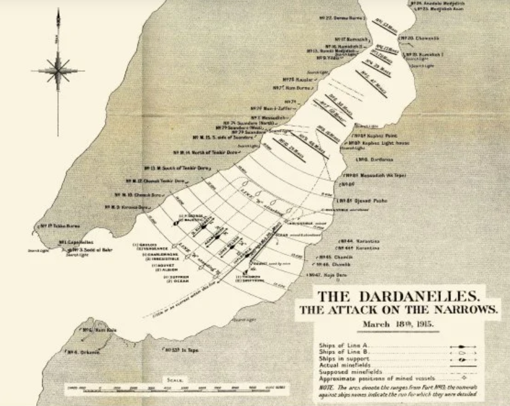
(이제 조급해져서 다다넬즈 해협 안쪽 깊숙히 들어와 포격하는 영불 전함들의 모습. 물론 아무리 급해도 저렇게 기뢰가 부설된 해역에는 접근하지 않았음.) 3월 19일 안개가 자욱히 낀 새벽, 오스만 해군의 기뢰 부설함 누스렛(Nusret, '도움'이라는 뜻, 360톤, 12노트) 호가 26발의 기뢰를 싣고 나와, 영불 전함들이 저녁 때 선회해서 나가는 해역, 즉 아시아쪽 해안가의 에렌 쾨이(Eren Köy) 만에 기뢰를 부설함. 특히 이 기뢰들은 해협을 막아서는 가로선이 아니라, 아시아쪽 해안과 평행을 이루는 세로선으로 부설됨. 이 기뢰 부설에 걸린 시간은 불과 7분. 그냥 목표 지점에 가서 항진하면서, 26발의 기뢰를 15초 간격으로 투하하기만 하면 되었기 때문.
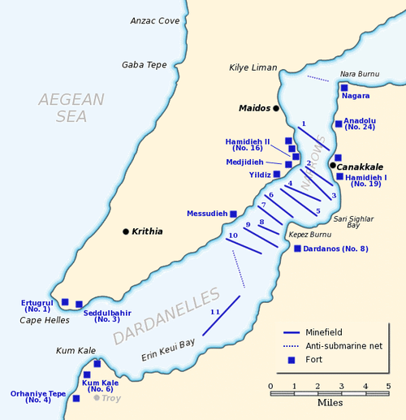
(전투 개시 이전에 부설된 10줄의 기뢰들은 해협을 가로질러 막아섰으나, 3월 19일 (실제 기뢰 부설은 3월 7일 새벽이었다는 이야기도 있음) 새벽에 새로 부설된 26발의 기뢰들은 저렇게 11번 라인을 따라 세로로 부설됨,)
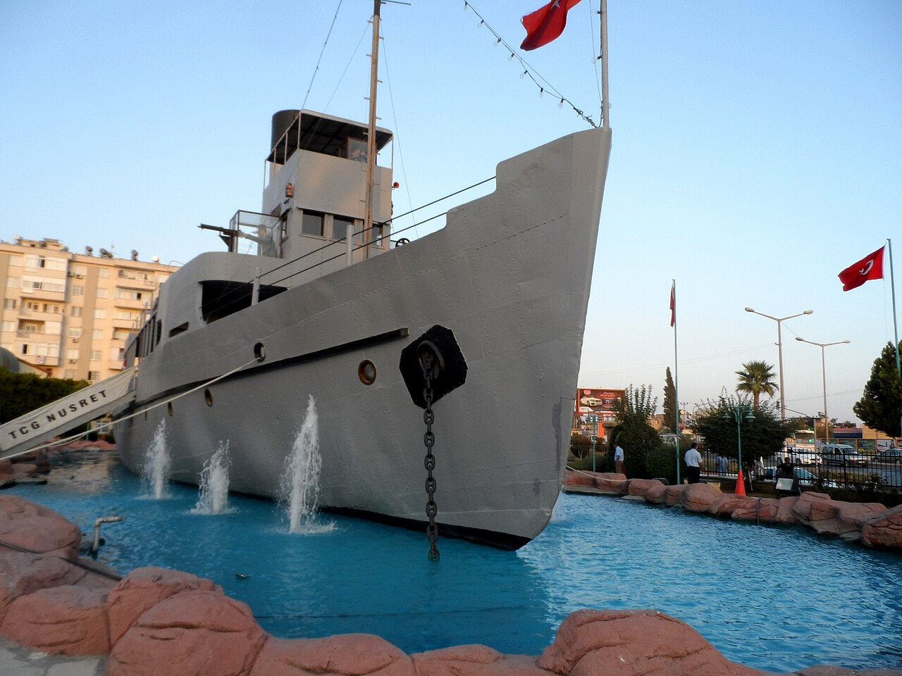
(오스만 투르크를 구한 위대한 군함 누스렛 호. 이건 너무 장난감처럼 페인트칠이 되어 있어서 모형으로 오해할 수도 있지만 이건 놀랍게도 실제 누스렛 호 본체. 원래는 1955년 퇴역한 이후 박물관 함선으로서 항구에 묶어놓았는데, 1989년 사고로 전복되며 침몰. 그러다 10년 뒤인 1999년 인양하여 복원한 뒤, 2003년 다시 박물관 함선으로 전시하고 있는 것. 아름다운 경광의 관광지로 유명한 차낙칼레에 있다고 함.)
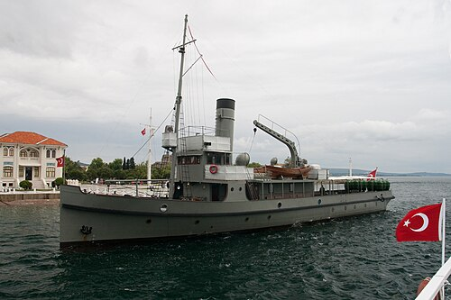
(이건 진짜 누스렛 호처럼 보이지만 이건 또 의외로 복제품.)
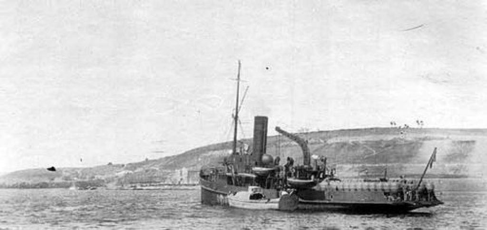
(WW1 당시 진짜 누스렛 호의 사진. 고물쪽 2개의 레일 위에 기뢰들을 13개씩 2줄로 탑재하고 있는 것이 보임.) 여기서 의아한 부분. 바다의 해저면은 깊은 곳도 있고 얕은 곳도 있는 것이 당연. 그런데, 계류 기뢰들을 부설할 때 그렇게 재빨리 아무렇게나 던져 넣어도 되나? 미리 그 위치의 바다 깊이를 세밀히 조사한 뒤 그 깊이에 따라 바닥의 닻에 연결하는 강철 와이어의 길이를 10m든 20m든 미리 설정해놓아야 하는 것 아닌가? 아님. 기뢰를 설치하는 측에서는 그냥 수면 아래 몇 m의 깊이로 떠 있도록 할지만 미리 설정하면 됨. 누스렛이 설치한 기뢰들은 수면 아래 4.5m 깊이에 떠 있도록 설정했음. 당시 계류 기뢰에는 어떤 장치가 되어 있길래 그렇게 아무 해역에서 던져 넣기만 하면 정확하게 수면 아래 깊이를 유지할 수 있었던 것일까? ** 역시나 분량 조절 실패로 다음주 목요일에 또 이어집니다. 다음주 월요일에는 다시 나폴레옹의 라이프치히 탈출기가 연재됩니다.